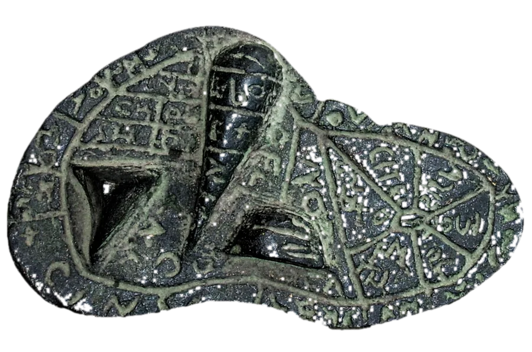

Each of the twelve regions answers one question: why is this verb subjunctive? Touch the region that explains the glowing verb. Hover or tap a god’s name to meet the god.
THE OBJECT BEHIND THE GAME

In 1877 a farmer ploughing near Gossolengo, outside Piacenza, turned up a small bronze model of a sheep’s liver. It is only about 12.6 × 7.6 cm, fits in the hand, and dates to the late 2nd century BC. Its surface is divided into regions, and each one is inscribed in Etruscan with the name of a god.
It was probably a teaching model or a reference piece for a haruspex, a priest who read the will of the gods in the entrails of sacrificed animals. Sixteen regions run around the rim, echoing the Etruscan division of the sky into sixteen houses of the gods. A mark on the victim’s liver could be read as a sign from the god who lived in that part of the sky. On the underside, one half is labeled for the Sun (usils) and the other for the Moon (tivs).
The Romans called the religious practices of the Etruscans the disciplīna Etrusca, and they inherited much of it. It covered the reading of entrails, the interpretation of lightning, and the rituals for founding cities and averting disaster. The Etruscans said it had been revealed by Tages, a child with an old man’s wisdom who sprang from a freshly ploughed furrow near Tarquinia.
Rome kept its own augurs, who read the flight of birds, but for centuries the senate summoned haruspices from Etruria to explain portents. Julius Caesar’s haruspex Spurinna warned him to beware the Ides of March. In the 1st century AD the emperor Claudius, himself a scholar of the Etruscans, organized the haruspices into an official order.